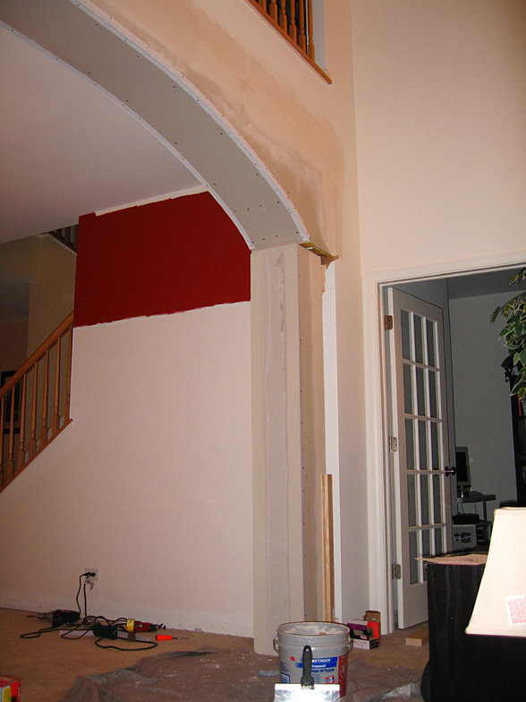

My Arch/Pillar/Trim/Crown Moulding Project - September 2007
By Neil Camara
July 20, 2007 - No arch, chair rails and trims. This is how it looked before the project started.
July 21, 2007 - arch installed. Wife paints as well.

Built corners to give accent to the pillars
Pre-installed corners since nailgun won't fit in between wall and pillar when it gets installed
Installed wet drywalls on arch

Installed corners again but this time, accesible side

August 10, 2007 - New arch, pillars, chair rails and trims installed with 50% painted
September 9, 2007 - New arch, pillars, chair rails, trims and painting finally complete
February, 2008 - Added another arch at the butler pantry(beside mirror). Also sanded all bannister/rails(up and stairs) and stained it with dark walnut. Also added new furniture.
Other Projects
Family Room Arch/Coffered Ceiling Project - 2009
Family Room Project
Patio/Pergola Project - 2010
Patio/Pergola Project